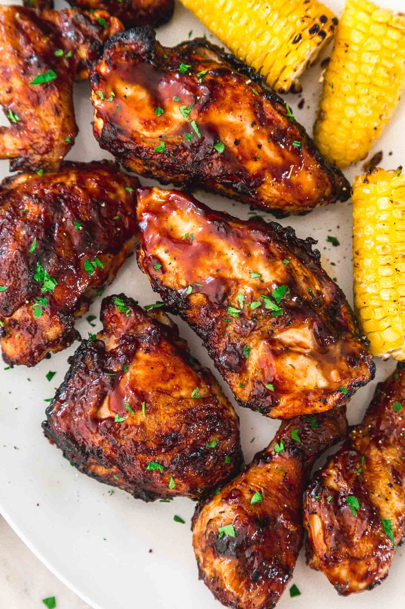

Grilled BBQ Chicken

Description
Simple recipe of a juicy and tasty Grilled BBQ Chicken that you can make at home for your friends and family
Ingredients:
- 4 Pounds bone-in, skin-in chicken parts (legs, thighs, wings, breasts)
- Kosher salt
- Extra virgin olive oil
- 1 Cup barbecue sauce, store-bought or homemade
Steps to make this:
- Coat the chicken pieces with olive oil and sprinkle salt over them on all sides.
- Prepare one side of your grill for high or direct heat.
- Lay the chicken pieces skin side down on the hottest side of the grill in order to sear the skin side well.
Once you have a good sear on one side, turn the chicken pieces over and move them to the cooler side of the grill.
- Turn over the chicken pieces and bast them with your favorite barbecue sauce. Cover the grill again and
allow to cook for another 15 to 20 minutes.
- Optional: You can sear a final time to finish the chicken with a pretty "brownish" stripes. Sear them for around a minute or two.
- Use a clean brush to paint the cooked chicken with more barbecue sauce and serve.
- Lick your fingers multiple times :D